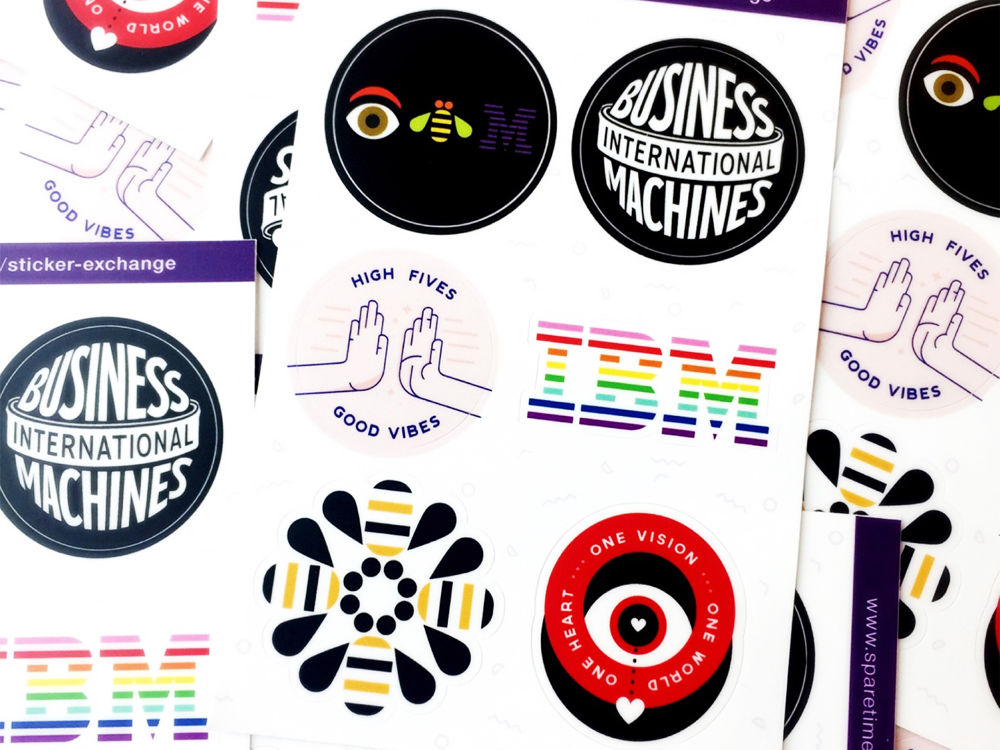

Sticker Exchange

Promoting a healthy and positive studio cultural has been a challenge for studios big and small around the world. This is shocking to many, considering the investment and effort IBM has put into creating a global makers culture. At IBM, there are so many talented makers hidden in the plain sight, but luckily, we have the support of the studio to share our love for making. Over the past three months, I’ve been part of this movement via the Sticker Exchange. This is our story:
It all started with a post on the Studios slack channel: “Stickers! Grab them while they last!” Before I knew it, IBM designers swarmed in trying to get their own original sticker. Before long, I noticed our stickers on laptops across the Austin Studio, a symbol of our unique interests, journeys, and personalities.
Starting the project
I went to Ryan Swedenborg, who was one of the founders for Print Exchange and I asked her if she would be interested in teaming up on a sticker exchange. A conversation turned into a studio wide sticker swap, and Sticker Exchange was born. It was one of the five activities highlighted at the Studio Summit a few months ago during the Making After Dark (MAD) House event, which helped makers from the Austin studio showcase their work and inspire our global studio leaders.
What is Sticker Exchange? It’s as simple as designing a sticker, printing the design and sharing with others. For the first beta run, we set a theme, a sticker size, and a deadline. A Google Form was used for sign up, so we know how many stickers each of us should print, and then we spun up the #ibm-sticker-exchange Slack channel to share updates.
A global get together
A total of 52 designers signed up in the Austin Studio and embraced the challenge. They came up with ways to share their own unique expression and voice, all while staying within the theme of Love. During the MAD House event, designers from our global studios sent stickers that represented their individual studios. For example, the “Awesome Possum” from IBM Australia Studio really made a great conversation piece.